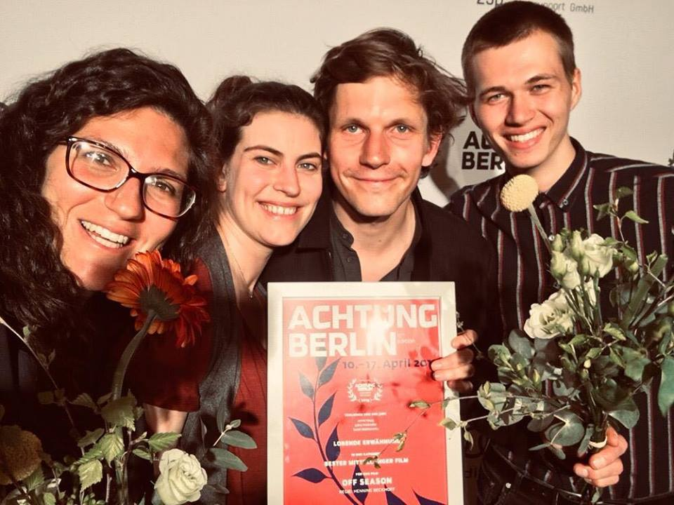

Off Season


2019 - Medium Feature - 43 min
Directed by: Henning Beckhoff
Company: Film university Babelsberg Konrad Wolf
Sound Designer
Articles
German Films Quarterley | Film university Babelsberg Konrad Wolf | Wikipedia
Reviews
'La Septiéme Obsession | Potsdamer Nachrichten Newspaper | Film-Rezensionen
Festivals
Berlin International Film Festival 2019
Achtung Berlin Film Festival 2019